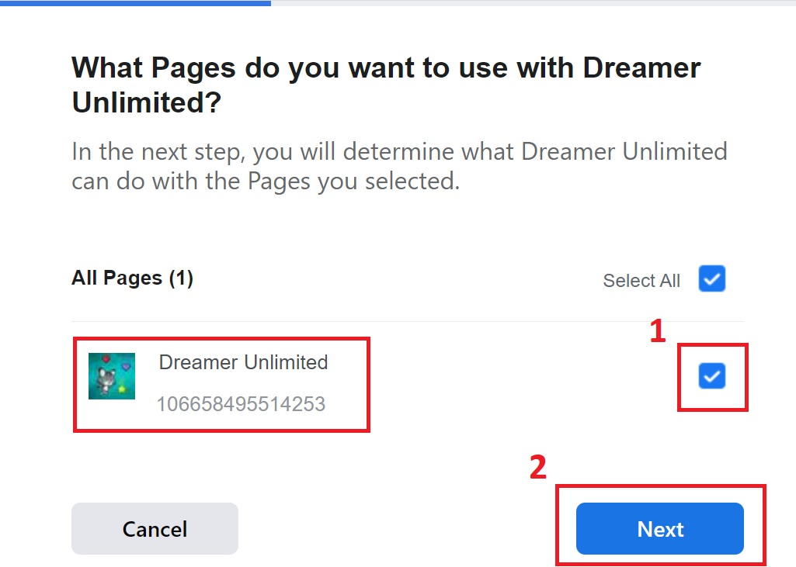
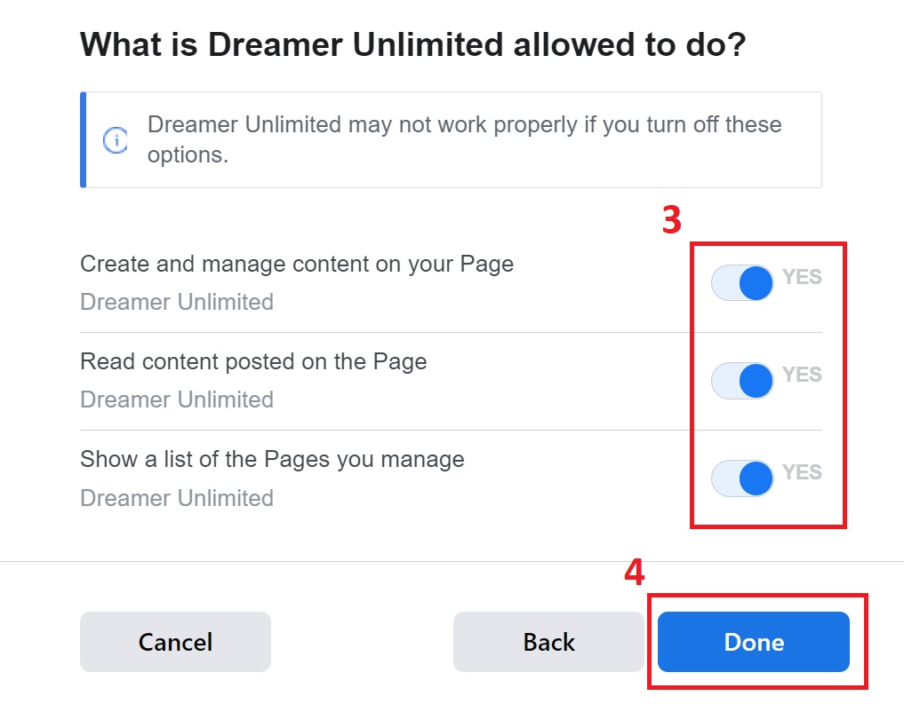
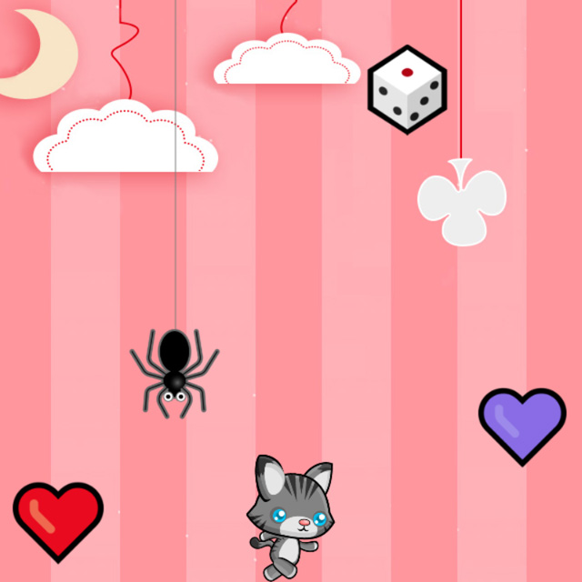

Visually divide the screen in half. Tap either on the left or right screen part to move hero left or right. Or use keyboard Left/Right arrows to move hero and select buttons; Esc/Enter to pause; Up/Down arrows to select a hero. Moving hero into the screen edge teleports him to the opposite side. You have 10 seconds for action. Catch the falling objects to score points: +3 for hearts, +4 for stars, +5 for diamond, +6 for booster, and +7 for watermelon. Pick up the booster dice to recharge the timer and yield a random points multiplier in the range from 3 to 7 that will last from 3 to 5 seconds. Pick up the watermelon to obtain a revive. The spiders are the ones to avoid. Colliding with them will cost a revive or end the game if you are out of watermelons. Spider attack speed is increased every 50 points earned and reaches maximum from 300 points. In case spider is attacking booster at the same time with you, you will get 1 second immunity if your booster attack is synced precisely with the spider✨
1. In the event the installed game does not launch in full-screen, but with browser UI instead, relaunch it with the active Internet connection
2. To control the game buttons and character with a TV remote arrows, deactivate the onscreen mouse pointer from the remote
⛔ The feature is suspended by Facebook for the public use.
In case it gets the green light, simply follow the steps as per the pictures to login first then tap button again to post. Your Player ID will always be anonymous and the same since it is tied to the Facebook account.


1. When detected as an app, directly from mobile or desktop browser 'three dots' menu, onto Android and Windows home screen
2. You can manually download and install the .apk file on an Android device (e.g. Android TV) from the Google Play mirror site ApkCombo
The game is provided “as is” without any warranty that: 1) it will work correctly; 2) it will not freeze or crash your device.
By playing you confirm you are at least 13 y.o.
The developer does not transmit to and store a personally identifiable information on his own remote servers. Your progress is kept locally on your device in the default browser cache. By deleting the browser cache, you are deleting your progress, which cannot be recovered.
Your interaction with the game is being logged by Google Analytics and Facebook Analytics. Those services are transmitting to and storing your statistical information on their own servers. Then the services are using your information according to their own Privacy Policies, which are located in the footers of their respective web sites. For example, follow the link to learn how Google uses collected information.
The game might in the future display nonpersonalised, noninterest based ads, which you may find to be irrelevant.
Dreamer Unlimited is a simple casual web game, initially a personal web tech learning project, not a commercial release.
